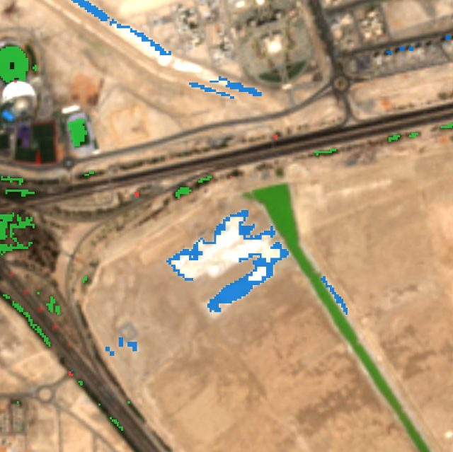
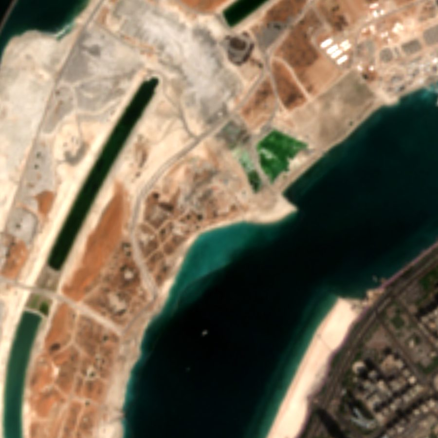
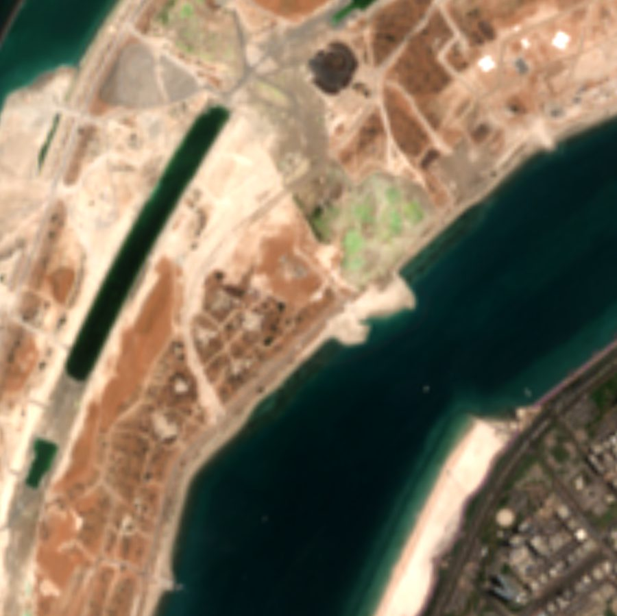
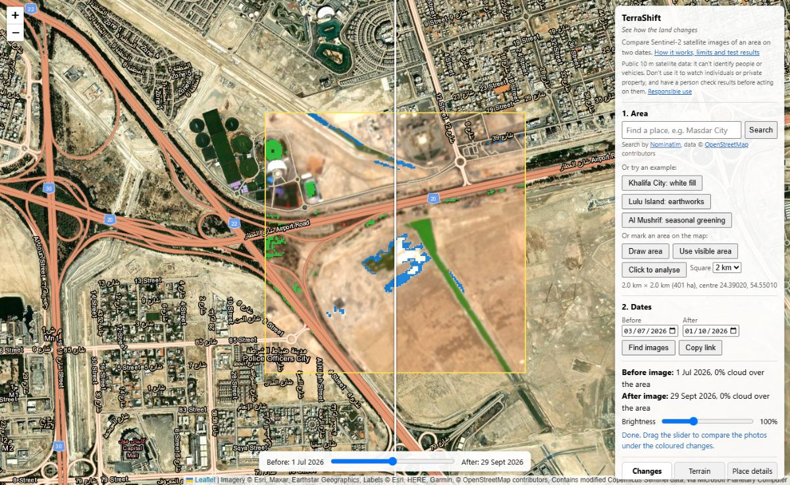
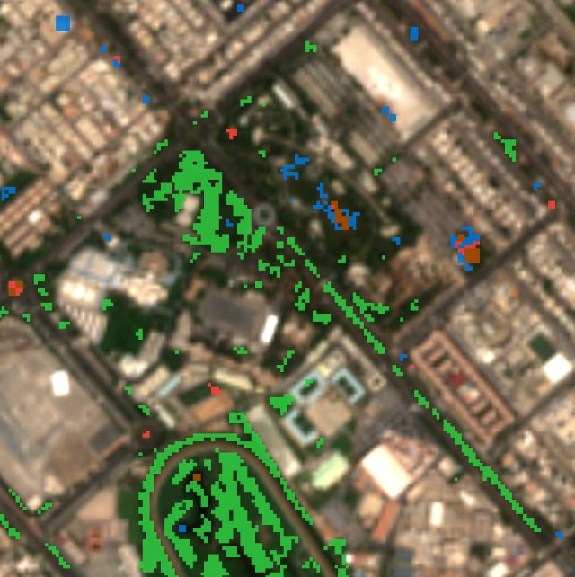
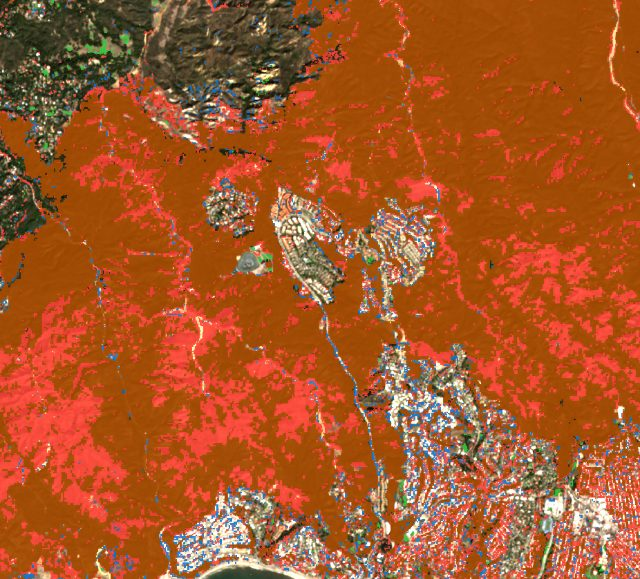
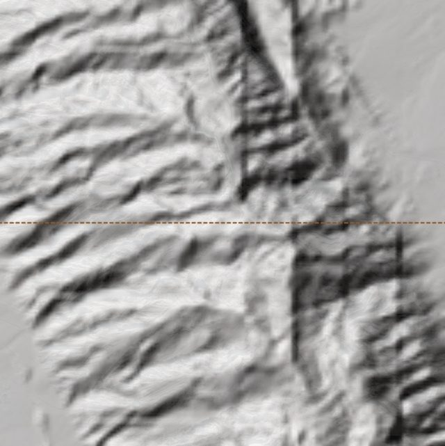

New buildings or bare ground
Building sites, new roads, cleared land and fresh fill. Shown in blue.
Khalifa City south, Abu Dhabi, Jul to Sep 2026
Free satellite change detection
See how the land changes
Pick a place and two dates. TerraShift finds clear satellite photos from those dates and colours in what changed.
Free, no account, runs in your browser.


Before · 6 Jul 2026 After · 29 Sep 2026Search for a place, move the map, or click a spot. Then draw the area you want to check.
A before date and an after date. TerraShift finds the clearest Sentinel-2 photo near each one.
Swipe between the two photos. Coloured squares show where the land changed, with a summary in hectares.

Every picture here is a real result from TerraShift.

Building sites, new roads, cleared land and fresh fill. Shown in blue.
Khalifa City south, Abu Dhabi, Jul to Sep 2026

New parks and farms, cleared trees, and seasonal greening. Green for gained, red for lost.
Al Mushrif, Abu Dhabi, Jul to Sep 2026

Ground where plants burned, found with the burn ratio. Shown in dark orange.
Palisades fire, Los Angeles, Dec 2024 to Feb 2025

Height, slope, which way slopes face, low-lying ground, a hillshade and an elevation profile.
Jebel Hafeet, near Al Ain
Each one opens TerraShift with an area and dates already chosen, and starts the search.
It was checked against nine test sites around Abu Dhabi and Dubai, and against the official map of the Palisades fire. See the validation results
TerraShift is for seeing how land changes, such as building sites, farms, parks and fires. Please don't use it to watch people or private property. It uses public 10 m satellite data, so it can't identify anyone, and it can be wrong. A person should check the before and after photos before anyone acts on a result.
Ready to see how a place has changed?
Launch TerraShift